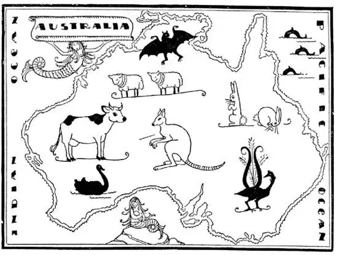

65
Fortune Island
财富岛

HAVE you ever been homesick? If you haven’t, then you have never been far away from home for any length of time, or you never had a home. Just suppose you lived on the other side of the World from your father and mother, from your sisters, brothers, and friends, and were only able to get home once in five or ten years, or maybe never. The English people probably love their homes more and get more homesick than any other people in the World, and yet they go farthest away from home and live there.
There is a big island, so big that it is usually called a continent and so far off from England that it used to take five or six months, a half year, to get to it from England, and even now it takes a month or more by ship. On it lived only wild black men, yet the English people went there, built great cities and now rule over the island. This island is Australia, which means “South Land,” for it is far, far south—south of the Equator, where it is summer when it is winter here and night when it is day here. The island was so far away the English thought it would be a good place to send prisoners, to get rid of them, because once there they could not get away and they could not harm anybody but themselves. Many prisoners were sent there and few of them ever came back. Some even died of homesickness, for even a criminal is human and gets homesick.
It was not very long, however, before the English found that this island was too good just for prisoners. The central part of Australia was a desert, but there were gold mines in the desert, and neither a desert nor danger will keep men away when gold, magic gold, is to be found. So a great many young Englishmen went out to Australia in search of gold and to make their fortunes, expecting to return home as soon as they had done so. But they found that it cost more to get the gold than it was worth—it didn’t pay. They didn’t give up, however. They were bound to make their fortunes in one way or another, so they tried another. In the southeastern part of this island was grass land. Grass was good for raising sheep and cattle, but there were no sheep and no cattle. So the Englishmen sent to England for sheep and cattle. But when the sheep and cattle came it was found that they would not eat the grass—it was not the right kind. And still the Englishmen were not discouraged. “If at first you don’t succeed, try, try again.” So they sent back again to England and got good grass seed and planted that. And then at last they did succeed, for the grass grew exceedingly well and before long the sheep and cattle turned out to be a “gold mine,” better even than the gold mines they had expected to find. From the sheep that they raised they got the finest wool in the World—very long and silky. It was shipped to England and other places to make woolen clothing, and Australia is now the greatest wool-raising country i. t. w. W. And the cattle grew and prospered, and now frozen beef and mutton are sent back to England, which hasn’t nearly enough beef of its own.

But not long after the sheep and cattle had gotten a good start a peculiar thing happened. An Englishman carried a pair of pet rabbits out to Australia. The pair of rabbits got loose and started to raise families. Now rabbits as well as sheep like grass. But rabbits raise families very, very fast, much faster than sheep or cattle, so before very long there were more rabbits in the country than there were sheep, and there were so many millions of rabbits eating up the grass and running wild over everything that there was not enough grass for the sheep. More rabbits and more rabbits and more rabbits—the people could not get rid of them. Men poisoned millions of them and trapped millions more, but for every million killed, millions more were born. It was like some of the plagues that visited Egypt in Bible times. The people built a wire fence all the way across the country to try to pen the rabbits in. But some of them escaped through the fence, so another fence was built. Men are still killing them off by the millions. They pack some of the rabbit meat in cans and send it to England, and they send the skins back also—“a rabbit skin to wrap up Baby Bunting in.” But they cannot get rid of the little creatures altogether and probably never will.
The native animals in Australia are very peculiar. One curious animal is the kangaroo, an animal as big as a man. He stands on his two hind legs like a dog begging for food. He uses his tail as if it were a third leg, sitting upon his two legs and tail as if on a three-legged stool. His two front legs are very small and almost useless. He doesn’t run along on all fours; he jumps over the ground on his hind legs, making long hops. The mother kangaroo carries her babies in a pocket made of the skin of her stomach; it is a nest and a cradle.
Sailors used to return from long voyages and say they had seen living in the sea beautiful girls—from the waist up—with bodies like fish from the waist down. They called them mermaids. You have heard of them in fairy-tales, of course. Well, there are real mermaids on the west coast of Australia. They do live in the sea, and they do hold their babies in their arms. From a distance a sailor might imagine them beautiful; but close up they do not look like the beautiful girls with fish tails you read about, for they are really ugly animals called sea-cows. How disappointing!
The natives of Australia are black people called “Bushmen.” They can’t count even up to ten nor write their names nor read a single word. About the only thing they know is how to get food. They wear very little clothing. Instead of clothing they paint their bodies, and they raise bumps on their skin by scratching it with the edge of a shell and rubbing clay into the scratches. The more bumps they have on their bodies, the more beautiful they think they are.
The Bushmen have a peculiar plaything called a boomerang. It is made of a piece of wood shaped like a new moon. They throw it into the air away from themselves, and it turns round and round like a wheel and, if properly thrown, will come back to the thrower. I have several boom-erangs which I have learned to throw. A friend of mine once said, “I hear you know how to throw a kangaroo.” “To throw a kangaroo!” said I. “No, not even a Bushman can do that.”
The capital of Australia used to be a city called Melbourne. But a new city called Canberra has been built for the capital. It is a made-to-order city. The city was laid out, streets made, a capitol built, and houses put up, and then people moved in. The chief city is Sydney.
The healthiest country in the World is southeast of Australia. It is called New Zealand. You will remember that Zealand is a part of Denmark and you may remember that it is the healthiest country in Europe. New Zealand is made of two big islands that look something like Italy or a boot turned upside down. They do not seem to be far away from Australia on the map, but it takes four or five days to get to them by ship from Australia. In the northern part of New Zealand are natives called Maoris, but they are quite different from the Bushmen in Australia. They used to be cannibals, but they have brains, and they learned so much from the white men that now some of them are as well educated as their teachers, and are even members of the New Zealand Parliament.
【中文阅读】
你有没有想过家？如果没有，那么你一定没有出过远门，在外待过一段时间；或者你从来没有一个家。假使你居住在世界的另一面，远离你的爸爸妈妈、兄弟姐妹和好朋友，五年或十年才能回家一次，或者也许永远都回不了家了。英国人可能比世界上其他任何民族更热爱自己的家园，也更容易想家，但是，仍有英国人到离家最远的地方，在那里定居下来。
有一座岛很大，大到被称为大陆。它离英国很远，过去要花五六个月或者说半年的时间才能从英国来到这个岛。即使现在，坐船也至少需要一个月的时间。在这座岛上，那时只住着野蛮的黑人。后来，英国人后来到了那儿，建立了大城市，现在还统治着这座岛。这座岛就是澳大利亚，“澳大利亚”的意思就是“南方之地”，因为它在遥远、遥远的南方——赤道以南。当美国这儿是冬天的时候，那儿是夏天；这儿是白天的时候，那儿是夜晚。这座岛离英国非常遥远，所以英国人认为如果将犯人遣送到那儿，那可是关押他们的好地方，因为一旦到了那里，他们就无法逃离，也就伤害不到任何人，除非伤害他自己。许多犯人被送到那儿，几乎没有人再回到英国，有些犯人甚至因思乡而死，因为即使是罪犯，他也是有人性的，也会想家。
然而，没过多久，英国人就发现这个岛的好处不仅仅是用于关押犯人。澳大利亚的中心地带是一片沙漠，但是沙漠里有金矿。当金子、有魔力的金子有可能被发现的时候，无论是沙漠，还是危险，都不能阻止人们前往。于是，大批大批的英国年轻人远离家乡，来到澳大利亚寻找金子，寻求发财，期望一成功就马上回家。但是他们发现挖金子的成本太高，一点都不划算。然而，他们并不放弃，下了决心，无论以怎样的方式都要实现发财梦。于是他们就尝试别的方法。在这个岛的东南部有大片草地。草地适合放牛养羊，但是那儿既没有羊也没有牛，于是英国人派人回国，将牛羊运来。牛羊来了，却发现它们不吃这儿的草——草的品种不对头。但是英国人并不气馁。“一开始不成功，就试了再试。”于是他们再次派人回到英国，带来适合的草籽，在澳大利亚种植。最终他们成功了，因为草长得特别好，不久羊和牛就变为“金矿”了，甚至比他们期望找到的金矿还要好。从他们喂养的绵羊身上，他们得到了世界上最好的羊毛——又长又柔软。羊毛被运到英国以及其他地方再生产出各种毛料衣着用品。 现在，澳大利亚是世界上羊毛产量最高的国家。牛在那里生长得也很好，又强又壮。现在，冷冻的牛肉和羊肉被运回英国，英国国内产的牛肉早已满足不了需求。
一开始，牛羊畜牧进展顺利。但是不久发生了一件特别的事。一个英国人带了一对宠物兔来到澳大利亚。后来，这对兔子逃走了，开始繁殖小兔子。兔子和羊都喜欢吃草。但是兔子繁殖的速度非常、非常快，比羊和牛快多了，所以不久，这片土地上，兔子就比羊多了，几百万只兔子吃掉了大量的草，它们又不受任何约束，变得狂野。这样，羊就渐渐没草吃了。兔子越来越多、越来越多、越来越多——人们无法消灭它们。人们毒死了几百万只兔子，又捕捉了几百万只兔子，但是，每消灭一百万只兔子，几百万只兔子又出生了。就像在《圣经》时代埃及遭受的瘟疫一样。人们建起了一道铁丝网栅栏，穿越整个地区，试图将兔子圈进去。但还是有些兔子钻过栅栏逃出来，于是又建起另一道栅栏。人们现在仍然成百万地杀掉兔子。他们把兔肉做成罐头送回英国，也将兔子的皮送回去——“一张兔皮包住了一个邦廷宝宝” [1] 。但是他们无法完全摆脱这些小动物，很可能永远都摆脱不了。
澳大利亚的土生动物非常独特。一种奇特的动物就是袋鼠，长得与人一样大。它靠两条后腿站立，像立起来要东西吃的狗。袋鼠还把自己的尾巴用作“第三条腿”，坐在两条腿和尾巴上，就好像坐在一只三条腿的凳子上。袋鼠的两条前腿非常短小，几乎没有用。袋鼠不是靠四条腿向前奔跑，而是靠两条后腿跳跃，一下能跳得很远。袋鼠妈妈的肚子上长着一只口袋，用来装袋鼠宝宝，这只口袋既是窝，又是摇篮。
以前，长途航海回来的水手们常说他们见过生活在海洋里的美丽的姑娘——腰部以上似人，腰部以下身体像鱼。他们称这种生物为“美人鱼”。当然，你们在童话故事中就听说过美人鱼了。你知道吗？在澳大利亚西海岸有真的美人鱼。它们确实生活在海里，也确实用前肢抱着自己的孩子。可能水手从远处看就想象它们多么美丽，但是近看，它们并不像你从童话故事里读到的那样是长着鱼尾的美丽姑娘，其实它们是一种很丑的动物，叫做“海牛”。多么令人失望啊！
澳大利亚本土著居民是被称为“丛林居民”的黑人，他们不识数，数数甚至数不到十，也不会写自己的名字，更不识字。他们唯一懂的就是如何获得食 物。他们不穿什么衣服，他们在身体上涂上颜料来代替衣服，他们用贝壳的边缘划伤自己的皮肤，然后在划痕上揉进泥土，这样皮肤上就会隆起肿块。他们觉得身上的肿块越多越好看。
澳洲土著居民有一种奇特的玩具，叫做“回飞镖”，回飞镖是用木头做的，形状像一弯新月。他们把回飞镖向空中扔出去，回飞镖像轮子一样不停转动，如果扔得恰当，它会飞回到原处。我有几个回飞镖，已经学会怎么扔它们。我的一个朋友曾对我说，“我听说你会扔袋鼠。”“扔袋鼠！”我说，“我不会，即使是丛林居民也做不到啊。”
澳大利亚过去的首都是一座叫墨尔本的城市，但是人们建起了一座叫堪培拉的新城市作为首都。这是一座按设计建起的城市。城市设计好后，就建了街道，建了国会大厦，建起了房屋，然后人们迁入居住。澳大利亚最主要的城市是悉尼。
世界上最有益于健康的国家在澳大利亚的东南面，叫做新西兰。你还记得丹麦有个西兰岛吧，你也许记得丹麦是欧洲最有益于健康的国家。新西兰由两座大岛组成，两座岛看起来像意大利或像一只倒置的靴子。从地图上看，新西兰似乎离澳大利亚并不远，但是乘船从澳大利亚到新西兰需要四五天的时间。新西兰北部地区居住着叫“毛利人”的土著人，然而他们与澳大利亚的丛林居民十分不同，他们以前是食人生番，但他们有很高的智力，从白人那里学到很多东西，所以现在，他们中的一些人受过和他们的老师一样的良好的教育，有的甚至成为新西兰议会的成员。